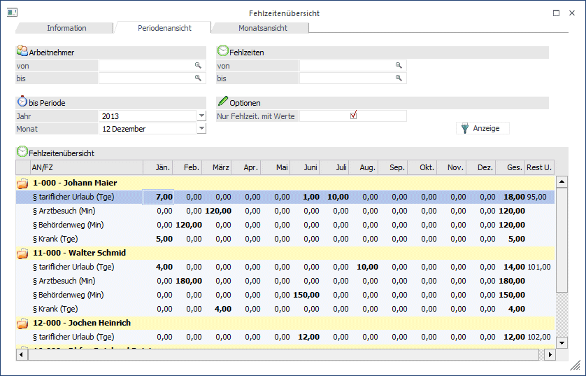
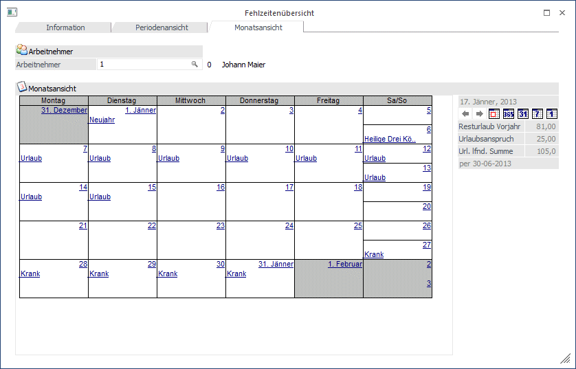
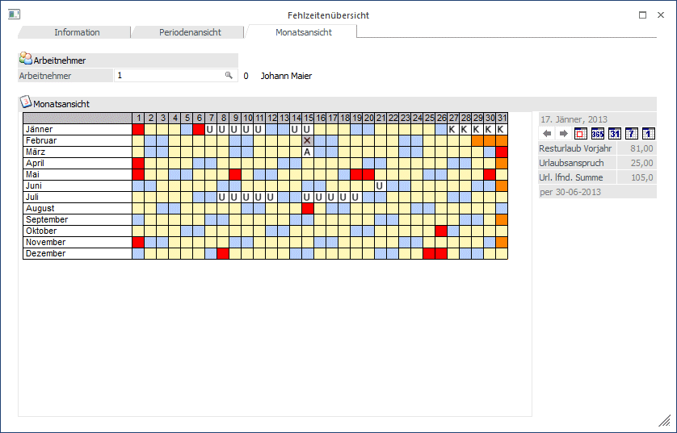
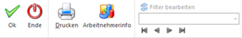
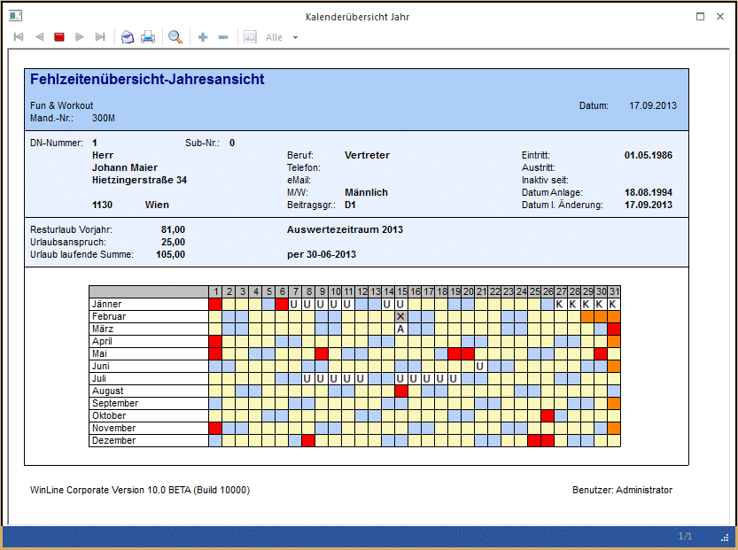
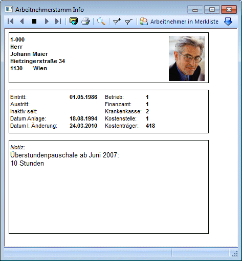

Die Fehlzeitenübersicht, die über den Menüpunkt
1 Abrechnen
1 Zeiterfassung/Auswertung
1 Fehlzeitenübersicht
aufgerufen werden kann, zeigt eine Übersicht über alle erfassten Fehlzeiten.
Nach Aufruf des Menüpunktes wird zuerst eine allgemeine Information angezeigt. Dazu gibt es dann zwei Register, in denen die Fehlzeiten dargestellt werden:
ü Periodenansicht
In der
Monatsansicht können einzelne oder alle Fehlzeiten für einzelne oder alle AN
angesehen und ggf. auch verändert werden.
ü Monatsansicht
In der
Monatsansicht werden - wie im AN-Stamm - nur die Fehlzeiten einzelner AN
angezeigt, wobei hier die Fehlzeiten in diversen Ansichten (Tag, Woche, Monat,
Jahr) angezeigt werden.
Periodenansicht
Bei der Periodenansicht muss zuerst ausgewählt werden, welche Datenbereiche angezeigt werden sollen. Dazu gibt es folgende Einschränkungsmöglichkeiten:
Ø Arbeitnehmer von - bis
Auswahl der AN, für die Fehlzeiten angezeigt bzw. bearbeitet werden sollen. Wie die AN-Nummer eingegeben werden kann, dazu gibt es mehrere Möglichkeiten. Details dazu entnehmen Sie bitte dem Kapitel Aufruf einer AN-Nummer.
Ø Fehlzeit von - bis
Auswahl der Fehlzeiten, die angezeigt bzw. bearbeitet werden sollen. Durch Drücken der F9-Taste kann nach allen angelegten Fehlzeiten gesucht werden.
Ø Nur Fehlzeiten mit Werte
Wenn diese Checkbox aktiviert wird, dann werden nur die AN und Fehlzeiten angezeigt, für die in der ausgewählten Selektion Daten vorhanden sind.
Beispiel:
Bei den Fehlzeiten von - bis wird ein Krankenstand ausgewählt, dazu wird die Option "Nur Fehlzeiten mit Werte" aktiviert. Als Ergebnis werden nur die AN angezeigt, bei denen bereits ein Krankenstand erfasst wurde.
bis Periode
Ø Jahr
Aus der Auswahllistbox kann das Jahr ausgewählt werden, für das Fehlzeiten bearbeitet werden sollen. Es stehen alle Jahre zur Verfügung, für die es Abrechnungen gibt. Zusätzlich wird auch noch das "nächste" Jahr (aktuelles Abrechnungsjahr + 1) vorgeschlagen. Dies wird ggf. für zukünftige Fehlzeiten (Urlaubsplanung) benötigt.
Ø Monat
Aus der Auswahllistbox kann das Monat ausgewählt werden, bis zu dem die Auswertung durchgeführt werden soll. Abhängig von dieser Einstellung werden die letzten 12 Monate (das ausgewählte Monat/Jahr ist das Letzte) mit den gewünschten Fehlzeiteninformationen angezeigt.
Zusätzlich zu den hier aufgezählten Einschränkungen gibt es noch die Möglichkeit, die Selektion über den Filter (durch Anklicken des Filter-Buttons) weiter einzugrenzen, wobei hier auf alle Felder im AN-Stamm zugegriffen werden kann.
Durch Anklicken des Anzeige-Buttons wird die Tabelle gemäß den Einstellungen gefüllt.

Für jeden AN wird eine eigene Zeile dargestellt, wobei hier die AN-Nummer und der Name angezeigt wird.
Darunter werden die ausgewählten Fehlzeiten angezeigt. Die gesetzlich geregelten Fehlzeiten werden mit dem Zeichen "§" gekennzeichnet, die internen Fehlzeiten haben kein eigenes Kennzeichen. Nach der Fehlzeitenbezeichnung wird auch die Einheit angezeigt, in der die Fehlzeit geführt wird.
In den einzelnen Spalten wird jeweils die Summe der in diesem Monat verbrauchten Fehlzeiten in der entsprechenden Einheit dargestellt, wobei die Werte fett dargestellt werden. In der letzten Spalte wird eine Summenzeile (Summe der Fehlzeiten für den AN) dargestellt. Handelt es sich bei der Fehlzeit um den gesetzlichen Urlaub, dann wird noch eine weitere Spalte angezeigt, in der der Resturlaub zum Stichtag der ausgewählten Periode dargestellt wird.
Durch einen Doppelklick auf einen Wert wird die Fehlzeitenerfassung geöffnet. Hier können entweder die dahinterstehende(n) Erfassungszeile(n) bearbeitet werden, es können aber auch neue Zeilen erfasst werden. Dabei ist es auch nicht unbedingt notwendig, eine von-bis Datum einzugeben, es würde auch reichen, nur die Einheiten selbst anzugeben (z.B. 10 Urlaubstage im Juli, der Zeitraum selbst ist egal).
Ø Drucken
Durch Anklicken des Drucken-Buttons wird die aktuelle Ansicht (Periodenansicht) auf den aktuell ausgewählten Drucker ausgedruckt. Dabei werden die gleichen Einstellungen verwendet, wie sie auch in der Anzeige ausgewählt wurden.
Monatsübersicht
Im Register Monatsübersicht können nur die Fehlzeiten eines AN angesehen werden. Nach Eingabe der AN-Nummer wird eine Übersicht über das aktuelle Abrechnungsmonat angezeigt. Wie die AN-Nummer eingegeben werden kann, dazu gibt es mehrere Möglichkeiten. Details dazu entnehmen Sie bitte dem Kapitel Aufruf einer AN-Nummer. Bei den Tagen, bei denen eine Fehlzeit eingetragen ist, wird diese auch angezeigt. Die Fehlzeit selbst, die blau und unterstrichen dargestellt wird, kann auch angeklickt werden, wodurch man wieder in die Fehlzeitenerfassung gelang. Dort kann die Fehlzeit ggf. auch noch verändert werden.
Die Tage selbst werden auch blau und unterstrichen dargestellt. Klickt man auf einen Tag, dann wird das Fenster Fehlzeitenerfassung geöffnet, wo neue Fehlzeiten erfasst werden können.

Mit den folgenden Buttons kann die Ansicht auch verändert werden:
Mit den Buttons kann - gemäß der Ansicht - zwischen den einzelnen Tagen, Wochen oder Monaten geblättert werden.
 Heute - durch
Anklicken dieses Buttons wird - je nachdem, welche Ansicht gewählt wurde - der
aktuelle Tag (Systemdatum), die Woche mit dem aktuellen Tag oder das Monat mit
dem aktuellen Tag angezeigt.
Heute - durch
Anklicken dieses Buttons wird - je nachdem, welche Ansicht gewählt wurde - der
aktuelle Tag (Systemdatum), die Woche mit dem aktuellen Tag oder das Monat mit
dem aktuellen Tag angezeigt.
 Jahresansicht -
es wird das gesamte Jahr angezeigt, wobei immer das aktuelle Abrechnungsjahr
angezeigt wird. "Normale" Arbeitstage werden Gelb, Wochenenden werden in Blau,
Feiertage werden in Rot und "nicht vorhandene Tage" werden in Orange
dargestellt. Bei Tagen, wo bereits eine Fehlzeit hinterlegt ist, wird die Grafik
aus dem Fehlzeitenstamm angezeigt. Durch einen Klick auf einen Tag kann eine
neue Fehlzeit erfasst werden, wird der Klick auf einen Tag gemacht, wo bereits
eine Fehlzeit hinterlegt ist, dann kann der Eintrag geändert werden.
Jahresansicht -
es wird das gesamte Jahr angezeigt, wobei immer das aktuelle Abrechnungsjahr
angezeigt wird. "Normale" Arbeitstage werden Gelb, Wochenenden werden in Blau,
Feiertage werden in Rot und "nicht vorhandene Tage" werden in Orange
dargestellt. Bei Tagen, wo bereits eine Fehlzeit hinterlegt ist, wird die Grafik
aus dem Fehlzeitenstamm angezeigt. Durch einen Klick auf einen Tag kann eine
neue Fehlzeit erfasst werden, wird der Klick auf einen Tag gemacht, wo bereits
eine Fehlzeit hinterlegt ist, dann kann der Eintrag geändert werden.

 Monatsansicht -
es wird das gesamte Monat angezeigt, wobei immer das Monat angezeigt wird, das
der aktuellen Systemeinstellung entspricht. Die beim AN eingetragenen Fehlzeiten
werden durch einen blau unterstrichenen Eintrag markiert. Wenn dieser Eintrag
angeklickt wird, wird die Fehlzeitenerfassung geöffnet, wo der gespeicherte
Eintrag bearbeitet werden kann. Wird auf einen Tag geklickt, kann auch eine neue
Fehlzeit erfasst werden.
Monatsansicht -
es wird das gesamte Monat angezeigt, wobei immer das Monat angezeigt wird, das
der aktuellen Systemeinstellung entspricht. Die beim AN eingetragenen Fehlzeiten
werden durch einen blau unterstrichenen Eintrag markiert. Wenn dieser Eintrag
angeklickt wird, wird die Fehlzeitenerfassung geöffnet, wo der gespeicherte
Eintrag bearbeitet werden kann. Wird auf einen Tag geklickt, kann auch eine neue
Fehlzeit erfasst werden.
 Wochenansicht -
es wird immer nur eine Woche angezeigt, wobei immer die Kalenderwoche angezeigt
wird, in der sich der aktuelle Tag (Systemdatum) befindet. Die beim AN
eingetragenen Fehlzeiten werden durch einen blau unterstrichenen Eintrag
markiert. Wenn dieser Eintrag angeklickt wird, wird die Fehlzeitenerfassung
geöffnet, wo der gespeicherte Eintrag bearbeitet werden kann.
Wochenansicht -
es wird immer nur eine Woche angezeigt, wobei immer die Kalenderwoche angezeigt
wird, in der sich der aktuelle Tag (Systemdatum) befindet. Die beim AN
eingetragenen Fehlzeiten werden durch einen blau unterstrichenen Eintrag
markiert. Wenn dieser Eintrag angeklickt wird, wird die Fehlzeitenerfassung
geöffnet, wo der gespeicherte Eintrag bearbeitet werden kann.
 Tagesansicht -
es wird der aktuelle Tag (Systemdatum) angezeigt.
Tagesansicht -
es wird der aktuelle Tag (Systemdatum) angezeigt.
Der aktive Button (Jahresansicht, Monatsansicht, Wochenansicht oder Tagesansicht) wird benutzerspezifisch gespeichert. D.h. wenn die Fehlzeitenübersicht das nächste Mal aufgerufen wird, wird die zuletzt verwendete Einstellung wieder angezeigt.
Unterhalb der Buttons zum Umschalten der diversen Ansichten werden noch folgende Informationen angezeigt:
Ø Resturlaub Vorjahr
Hier wird der Resturlaub des Vorjahres angezeigt, wobei sich die Information immer auf die aktuelle Periode bezieht. Der Stichtag dazu wird unter den 3 Feldern angezeigt.
Ø Urlaubsanspruch
In diesem Feld wird der Urlaubsanspruch für das aktuelle Jahr angezeigt.
Ø Url. lfnd. Summe
In diesem Feld wird der noch vorhandene Urlaub per Stichtag (wird unter den 3 Feldern angezeigt) dargestellt.
Buttons

Ø OK
Durch Anklicken des OK-Buttons werden alle getätigten Änderungen gespeichert.
Ø Ende
Durch Drücken der ESC-Taste wird das Fenster geschlossen.
Ø Drucken
Durch Anklicken des Drucken-Buttons wird die aktuelle Ansicht (Jahresansicht, Monatsansicht, Wochenansicht oder Tagesansicht) auf den aktuell ausgewählten Drucker ausgedruckt. Beim jeweiligen Druck werden immer die entsprechenden AN-Informationen (Name, Adresse und Urlaubsdaten) sowie die aktuell ausgewählte Ansicht ausgedruckt.

Ø Arbeitnehmerinfo
Durch Anklicken des Arbeitnehmerinfo-Buttons (der nur in der Monatsansicht aktiv ist) wird ein Fenster geöffnet, in dem Daten zum AN angezeigt werden können. Der Inhalt dieses Formulares (P03W100I) kann frei definiert werden. Wenn der Button einmal aktiviert wurde, dann wird die AN-Info zu jedem AN referenzirrend angezeigt. Die Einstellung des Buttons wird beim Beenden des Fensters benutzerspezifisch gespeichert.

Ø Naviagation
Über die sogenannte VCR-Buttonleiste kann durch Mausklick zwischen den Datensätzen geblättert werden:
 Damit kann der
erste Datensatz angesprochen werden (Tastatur: STRG SHIFT POS1).
Damit kann der
erste Datensatz angesprochen werden (Tastatur: STRG SHIFT POS1).
 Damit kann der
vorherige Datensatz angesprochen werden (Tastatur: SHIFT -).
Damit kann der
vorherige Datensatz angesprochen werden (Tastatur: SHIFT -).
 Damit kann der
nächste Datensatz angesprochen werden (Tastatur: SHIFT +).
Damit kann der
nächste Datensatz angesprochen werden (Tastatur: SHIFT +).
 Damit kann der
letzte Datensatz angesprochen werden (Tastatur: STRG SHIFT ENDE).
Damit kann der
letzte Datensatz angesprochen werden (Tastatur: STRG SHIFT ENDE).